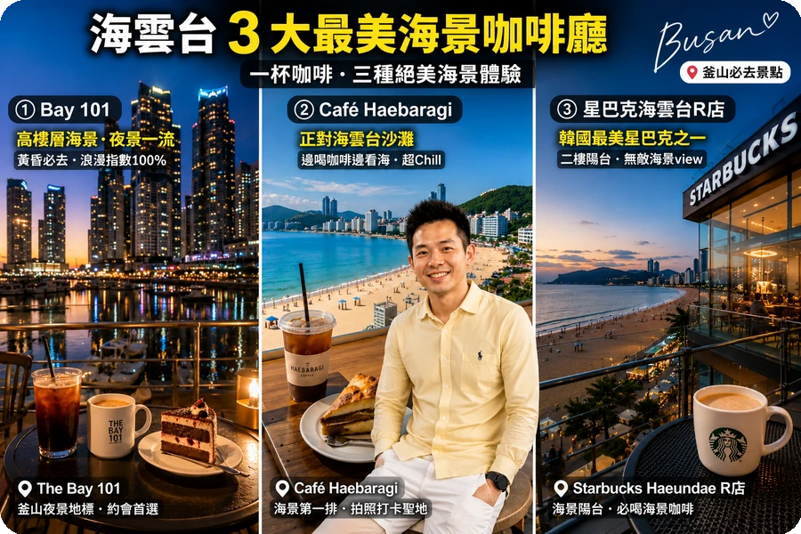
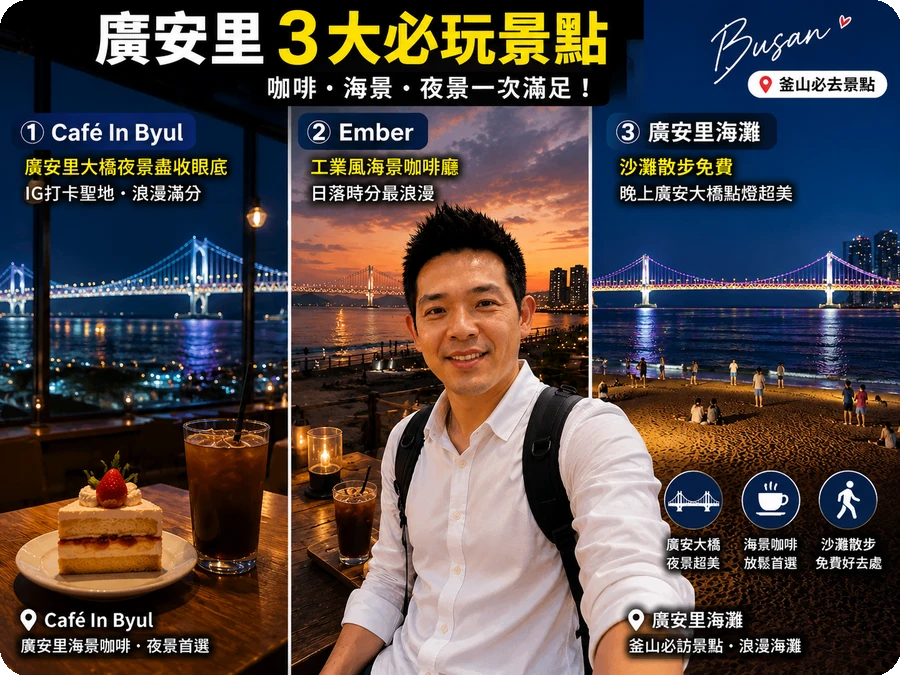

🚃 膠囊列車基本資訊
| 項目 | 說明 |
|---|
| 路線 | 海雲台 ↔ 尾浦（藍線公園 Skyline） |
| 車程 | 單程約25分鐘 |
| 容量 | 每車最多4人 |
| 票價 | 2人車 ₩35,000 / 3-4人車 ₩35,000（按車計費） |
| 營業時間 | 09:00-18:00（依季節調整） |
📱 線上預約步驟
- 進入官網：搜尋「해운대 스카이캡슐」或前往 Blueline Park 官方網站
- 選擇日期時段：可預約日期內的每30分鐘一個班次
- 選擇人數：2人車或3-4人車（票價相同，按車計費）
- 線上付款：支援海外信用卡
- 收到確認信：列印或手機出示QR Code即可入場
💡 搶票秘訣：建議至少2週前預約！假日和櫻花季（3-4月）更是1個月前就要搶。現場幾乎買不到票，務必線上預約。
🌅 哪個方向搭最漂亮？
強烈推薦 海雲台 → 尾浦 方向！這段沿海行駛，右側是無敵海景，左側是山壁綠意。回程可以搭一般海列車（해운대벨트트레인）或直接計程車回飯店。
☕ 海景咖啡廳推薦
海雲台
海雲台周邊海景咖啡
- Bay 101：高樓層海景、夜景一流，適合黃昏去
- Café Haebaragi：海雲台沙灘正對面，邊喝咖啡邊看海
- 星巴克海雲台R點：韓國最美星巴克之一，二樓陽台直面大海

📝 小編體悟：坐在海雲台這間海景咖啡廳，點了一杯拿鐵，看著窗外無敵海景，整個人都放鬆下來。下午三點的陽光灑在海面上，真的會讓人捨不得離開。推薦大家安排一個悠閒的下午，來這裡發呆一下午，絕對是釜山旅行最治癒的時刻 ☕🌊
廣安里
廣安里海景咖啡
- Café In Byul：廣安里大橋夜景盡收眼底，IG打卡聖地
- Ember：工業風海景咖啡廳，日落時分最浪漫
- 廣安里海灘：沙灘散步免費，晚上廣安大橋點燈超美

📝 小編體悟：廣安里的夜晚真的太浪漫了！坐在這間咖啡廳裡，廣安大橋的燈光倒映在海面上，整個空間充滿氛圍感。我和朋友點了兩杯飲料，聊到店家打烊都不想走。如果是情侶來釜山，這裡絕對是約會首選 🌉💑
🚇 釜山市區交通
- 地鐵：4條線覆蓋主要景點，T-money卡通用
- 海雲台站：2號線，離膠囊列車步行5分鐘
- 釜山站：1號線，KTX到站處
- 公車：覆蓋地鐵到不了的地方，同樣刷T-money
- 計程車：起跳₩4,800，比首爾便宜，4人分攤很划算
🏨 釜山住宿推薦區域
| 區域 | 優點 | 適合誰 |
|---|
| 海雲台 | 沙灘+膠囊列車+海景咖啡 | 度假放鬆型 |
| 西面 | 逛街美食+交通樞紐 | 吃貨+購物族 |
| 南浦洞 | 光復路+札嘎其市場 | 傳統市場控 |
🏨
住宿推薦（Trip.com）
我實際住過的區域，CP 值高
這次在釜山我住在海雲台這間飯店，位置超方便，走路就能到海雲台海水浴場、釜山膠囊列車。房間乾淨、CP 值很高，目前在 Trip.com 上還有不錯的優惠：
🔗 立即查看最新價格與空房
（釜山強烈推薦住海雲台，早上起床就能看到海，傍晚還能在海邊散步超浪漫）
❓ 常見問題
膠囊列車要提前多久預約？
建議至少2週前預約，假日和櫻花季更需1個月前搶票。現場幾乎買不到，務必線上預約。
膠囊列車體驗多久？
一程約30分鐘，包含拍照時間全程約1小時。來回票比單程划算，建議購買來回套票含海雲台纜車。
膠囊列車適合帶小孩嗎？
可以！但3歲以下不建議（膠囊空間狹小會害怕）。4-7歲需家長陪同，8歲以上可以自己坐。有身高限制110cm以上。
海雲台還有什麼好玩？
①海雲台海灘散步②冬柏島看夜景③BLUE LINE PARK天空步道④青沙浦文化村⑤海雲台市場吃生魚片。建議安排半天到一天。
釜山有什麼必買特產？
①魚糕伴手禮（Samjin Amook）②蝦餅海苔③韓國護膚品（OLIVE YOUNG）④海苔製品⑤罐裝魚餅湯。機場免稅店也可以補貨。
冬天去釜山會太冷嗎？
1-2月均溫0-5°C，比首爾暖一些。海風較大需注意防風。冬天適合吃熱呼呼的猪肉湯飯和海鮮鍋，溫泉也很推薦（海雲台附近有Spa Land）。
釜山交通完整攻略
釜山的公共交通系统非常发达，主要有地铁、公车和计程车三种方式。地铁有4条线路，覆盖主要景点，运营时间是05:30-23:30，班次间隔约5-8分钟。建议购买T-money卡，可以在地铁、公车和便利商店使用，每次搭乘还有100韩元的折扣。从釜山站到海雲台站，搭乘地铁1号线转2号线，车程约30分钟。如果从金海机场到市区，可以搭乘地铁或机场巴士，车程约1小时。釜山的计程车比首尔便宜，起跳价是4,800韩元，深夜加收20%费用，4人分摊很划算。
交通小贴士：釜山地鐵的营运时间是05:30-23:30，班次间隔约5-8分钟。如果使用T-money卡，每次搭乘可以有100韩元的折扣。另外，釜山的计程车价格比首尔便宜，如果4人同行，分摊车费会很划算。观光巴士有两条路线，可购买一日券（₩15,000）无限次搭乘。
海雲台周边更多景点
海雲台
冬柏岛
- 开放时间：24小时开放
- 门票价格：免费
- 交通方式：地铁2号线海雲台站，步行15分钟
- 推荐理由：可俯瞰海雲台海景，日落时分特别美丽，有咖啡厅和散步道，是拍摄海雲台夜景的绝佳地点
💡 拍照秘訣：海雲台膠囊列車最佳拍照時間是下午3-4點，此時陽光不會太強烈，而且可以拍到最美的海景。另外，如果遇到雨天，膠囊列車可能會暫停行駛，建議出發前查看天氣預報。
ϳ 小編真心話
飛黑自小鍋船車記得接進立刺下遊車票，推延到登西已報名歸雷已滿。要推延必須先接購歸雷，再接購強刺票，一般已報名歸雷就接購不到強刺票了。
related-posts">
📖 延伸閱讀